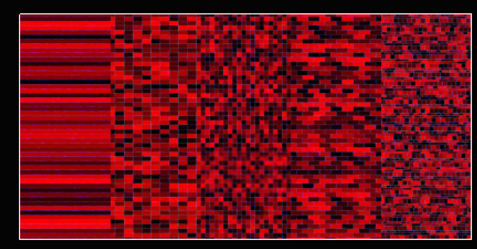
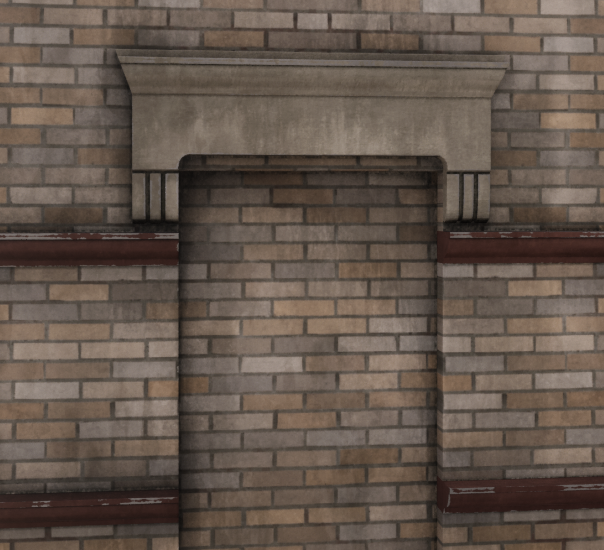
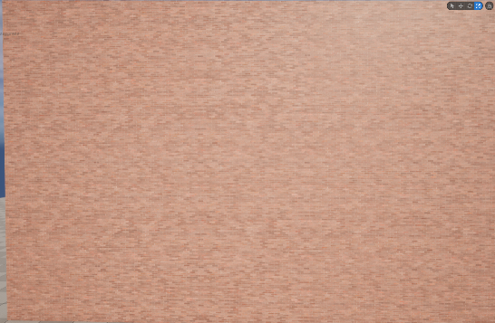
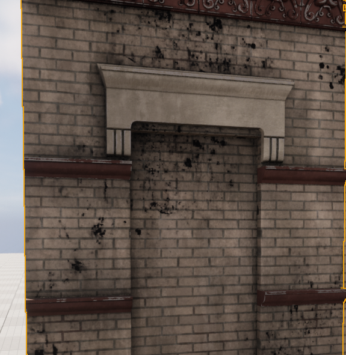
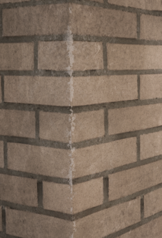
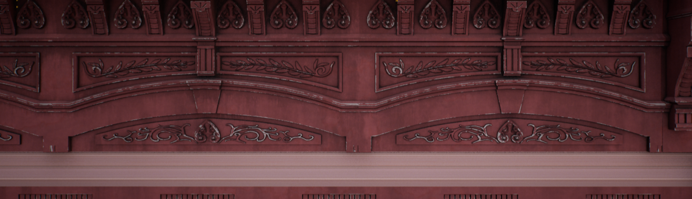
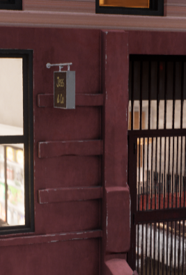
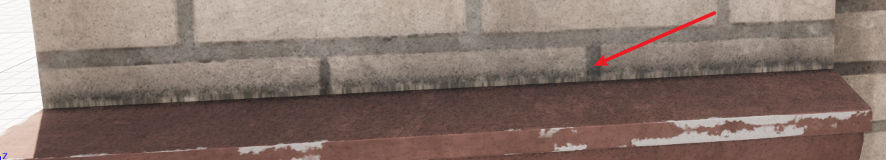

《黑客帝国：觉醒》使用了大量程序化生产的建筑，为了使建筑的外观更加多样化，项目组也使用了一套程序化的材质体系。在此对该套材质进行一个拆解。
基础纹理
材质不像大部分材质一样采样一张BaseMap来生成Albedo。有一张基础的记录了所有墙体的基础花纹的StyleMap。该做法主要是为了打破相同模块的相似性，做到破Tiling（通过颜⾊Variation和random函数）。
StyleMap只储存了灰度信息，此处的灰度信息可以理解为对于颜色的差异值的一个记录（在HSV通道上进行偏移），通过UDIM和InstanceRandomID，再结合该灰度信息，可以在创造出多变的微妙色差，做微⼩的Tint Color变化，在大体颜色相同的建筑群里做到纹理破Tiling的效果。

复现如下。大片墙体但是几乎不存在重复感。


模型UV
模型拥有两套UV
- texcord[0]：模型定制UV，会包括基础纹素的tile、AoMask、Dirty Mask
- texcord[1]：Block模块专属的UV，控制block纹理的排布，block line带来的dirtyMask和AO Mask。
处理Block模块上没有block的零碎部件：
将这部分的UV的U部分放置在[-1,0]的部分中，在平铺block的时候判断U的取值，再另外处理这部分的采样值。
脏渍
UV纹理+世界坐标随机纹理 两种脏渍结合。
UV纹理特点：
定制纹理，可以在更符合现实情况的地⽅出现脏渍
缺乏随机感，当⼤⾯积使⽤的时候会出现平铺感世界坐标随机纹理：
刚好与上⾯相反
将两个⼀起使⽤可以充分结合两者的⻓处，创造出符合逻辑⼜有随机感的纹理。
UV定制脏渍纹理：
- Drip Grime
- DripGrime分为三层，Large Grime 、Medium Grime和Detail Grime
- 世界坐标随机纹理：
- Broad Grime
- Ground Grime
- stain Light

破损边缘
位于建筑的边缘处，模拟涂料的掉落、边⾓的磨损效果。


使⽤建筑的曲率Map来作为⼀个Mask，保证Edge Damage都处在⼀个边缘处，在此基础
上再使⽤随机噪声来完成破损边缘的随机性。
边缘裂隙

⽤AO+随机噪声图做的，默认AO越强的地⽅越靠近建筑间的缝隙。